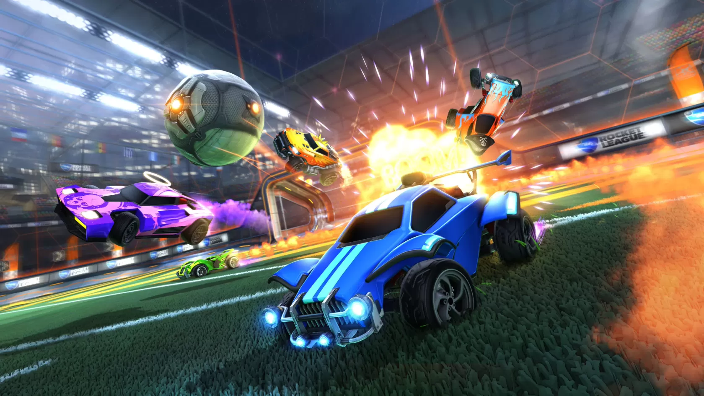
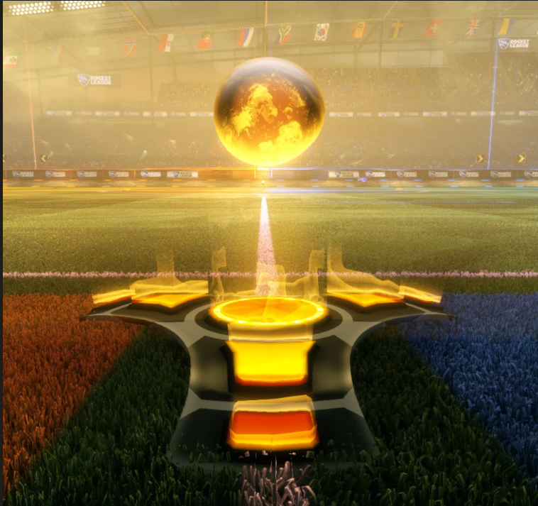

"I believe I can fly..."
Rocket League is one of the most mechanically challenging games in the world. There are a few fundamentals to
learn if you're new to the game, and master even if you're super experienced with the game.

Chaotic scene in a Rocket League match
An important thing to know about going into Rocket League is that there is always a limit to the amount of boost you
can use. Collecting boost is crucial to your matches and is solely responsible for determining the winner. Using boost
accelerates your vehicle to reach great speeds, and there are two ways to collect boost and use it to your advantage.


Boost pad (left) and boost pill (right)
A player's tank has a boost limit of 100. Collecting boost pads give the player 12 boost, while getting
boost pills gives the player 100 boost. This boost allows the player to do special mechanics and drive way faster
than a player without boost. A strategy widely used by players of all levels is something called boost stealing, which
proves how significant boost can be in matches. There are mechanics that require boost to execute properly.
One such mechanic, which is one of the most popular, is called an aerial, and it is used nearly everywhere in matches.
From amateur players to competitive play, you'll most definitely see this mechanic used in all of Rocket League.
GIF of someone doing an aerial shooting play
Aerials are used for all sorts of creative plays in Rocket League, which can create amazing looking moments, like this one.
This would just be the beginning of Rocket League, the tip of the iceberg.
Rocket League sites
| Instagram || | X (Twitter) |
|---|---|
| YouTube || | RL Wiki |